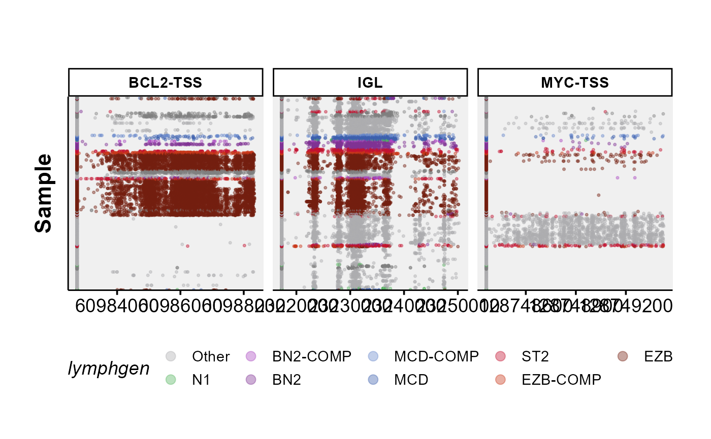

ashm_multi_rainbow_plot.RdGenerates a colourful multi-panel overview of hypermutation in regions of interest across many samples.
ashm_multi_rainbow_plot(
regions_bed,
regions_to_display,
exclude_classifications,
metadata,
seq_type,
custom_colours,
classification_column = "lymphgen",
maf_data
)Bed file with chromosome coordinates, should contain columns chr, start, end, name (with these exact names).
Optional vector of names from default regions_bed to use.
Optional argument for excluding specific classifications from a metadeta file.
A metadata file already subsetted and arranged on the order you want the samples vertically displayed.
the seqtype you want results back for if maf_data is not provided.
Provide named vector (or named list of vectors) containing custom annotation colours if you do not want to use standartized pallette.
Optional. Override default column for assigning the labels used for colouring in the figure.
An already loaded maf, if no provided, this function will call get_ssm_by_region, using the regions supplied into regions_bed.
Nothing
The input for this function is a bed-file with the following columns; chr, start, end, name.
Note that for this function to work, the column names must be exactly this.
The user also needs to specify a vector of names (regions_to_display) to further control what regions are to be displayed on the returned plot.
It is also possible to exclude specific classifications from the metadata file. This is achieved with exclude_classifications.
In addition the user can also use the metadata parameter to use an already subset and arranged metadata table.
This function will call get_ssm_by_region if maf_data is not called. For more info, refer to the parameter descriptions of this function.
#get lymphgen colours
lymphgen_colours = get_gambl_colours(classification = "lymphgen")
#build plot
ashm_multi_rainbow_plot(regions_to_display = c("BCL2-TSS",
"MYC-TSS",
"SGK1-TSS",
"IGL"),
custom_colours = lymphgen_colours,
seq_type = "genome")
#> # A tibble: 88 × 8
#> chr_name hg19_start hg19_end gene region regulatory_comm… name regions
#> <chr> <dbl> <dbl> <chr> <chr> <chr> <chr> <chr>
#> 1 chr2 96808901 96811913 DUSP2 intron-1 enhancer DUSP… chr2:9…
#> 2 chr17 56407732 56410140 TSPOAP1 interge… enhancer TSPO… chr17:…
#> 3 chr11 128339774 128345731 ETS1 introns enhancer ETS1… chr11:…
#> 4 chr11 128388492 128394163 ETS1 TSS-2 active_promoter ETS1… chr11:…
#> 5 chr6 31548325 31550717 LTB intron-1 enhancer LTB-… chr6:3…
#> 6 chr3 32020518 32024930 OSBPL10 TSS-1 active_promoter OSBP… chr3:3…
#> 7 chr11 65265237 65268359 MALAT1 ncRNA enhancer MALA… chr11:…
#> 8 chr11 65190369 65192380 NEAT1 ncRNA enhancer NEAT… chr11:…
#> 9 chr16 11347512 11350007 SOCS1 intron-1 enhancer SOCS… chr16:…
#> 10 chr1 226921088 226927982 ITPKB intron-1 enhancer ITPK… chr1:2…
#> # … with 78 more rows
#> Joining, by = "sample_id"
#> Joining, by = "start"
#> Joining, by = "sample_id"
